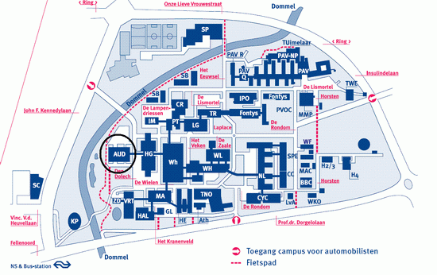

Concert informatie
Tijdstip
Zaterdag 6 maart 2009, 20.00 uur
Locatie
Blauwe Zaal, Auditorium, Technische Universiteit Eindhoven
Kaarten
Gewone kaarten: € 7,50
Studenten: € 2,50
De toegangskaarten zijn vanaf 19.00 uur op de dag van het concert te koop in het Auditorium van de TU/e.
Route
Den Dolech 2
5612 AZ Eindhoven
Klik op onderstaande afbeelding voor de route naar en de plattegrond van het universiteitsterrein. Het concert vindt plaats in het gebouw gelabeld met AUD. Let op: op het TU/e terrein dient parkeergeld betaald te worden wat neerkomt op 5 euro voor de concertavond. Eventueel kan gratis geparkeerd worden aan de andere kant van de Kennedylaan of Prof dr. Dorgelolaan.